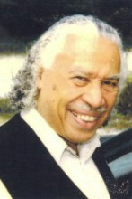

Please note: the AAS Obituaries are temporarily being hosted on this website while their full content is being ingested into the PubPub publishing platform newly adopted by the Bulletin of the American Astronomical Society. When the migration is complete, your existing links will take you to the final, migrated content. Contact peter.williams@aas.org with any questions.
Benjamin Franklin Peery (1922-2010)
Professor Benjamin F. Peery, Jr. died at his home in Silver Spring, MD of natural causes on 30 November 2010. His full life began in St. Joseph, MO (home of the Pony Express) on 4 March 1922.
His father was a railway mail clerk, so his family moved frequently. Most of his childhood was spent in southeastern Minnesota. He enlisted in the army in 1942, and served in campaigns in North Africa and Italy. After his discharge in 1945, he enrolled in the University of Minnesota, earning a BS in Physics in 1949. One of his early hobbies was to build and fly model airplanes. His intention to pursue aeronautical engineering changed to physics, but after receiving a MS in physics from Fisk University in 1955, he decided on a career in astronomy. He told the editors of the PBS series The Astronomers (1991, in which his career is highlighted) he thought it was shamefully absurd not to know what made the stars shine. So he began PhD studies in astronomy at the University of Michigan (Ann Arbor). His dissertation was on the complex eclipsing binary VV Cephei, where a compact hot star passes behind a cool giant star, revealing the structure of that giant's atmosphere. This task was especially demanding because of the complexity of the system's spectrum and the formidable array of observations assembled by Ben's advisor, Dean McLaughlin. Fortunately, Ben's strong physics background enabled him to design and construct one of the first oscilloscope measuring engines, which his fellow students called the PeeryScope. The final (1961) dissertation is an impressive combination of observational and astrophysical analysis. His degree was obtained in 1962; he had already begun a career at the University of Indiana, where he taught and did research (1959--1976). The Indiana years were highly productive. In addition to his own research, he was advisor on six PhD dissertations, and a master's thesis. Several of his students have also had productive careers. An ADS search on his students' names brings up several hundred abstracts. He is remembered warmly by his departmental colleagues. R. K. Honeycutt writes:
Those of us who overlapped with Ben at Indiana have only good memories about a good friend. He was a fine stellar astronomer who I remember most fondly from our lunchtime conversations. We talked about astronomy, politics, university issues, the arts, and human development/human nature. With Ben the conversation was always about ideas, not events or people. He was a scholar in the best Univ tradition--I learned a lot from Ben about being part of a University community.
His interests remained focused on cool giant stars, like VV Cephei, but moved to the study of systems where the radioactive element technetium could be identified in the spectrum. This observation, first made by Paul Merrill, proved that nuclear transformations involving trans-iron peak elements were taking place in stars, and was a keystone of the theory of nucleosynthesis. Nucleosynthesis and stellar structure were the main fields of his research career.
In 1977, Ben joined the faculty of Howard University. Shortly before his departure from Bloomington, IN, he told me that the new move would mean less time for research, and more emphasis on teaching, services, and efforts to bring more African Americans into scientific careers. Ben was only the second African American PhD in astronomy, and felt a responsibility to increase that number and to improve educational opportunities generally for the African Americans. He had been involved with the National Science Teacher's Association's (ASTA) Elementary School Science Program when he was at Indiana.
At Howard, he was principal investigator on a NASA grant which led to the development of research and teaching facilities for astronomy. The grant supported both colleagues and students who were able to carry out summer research projects at Goddard Space Flight Center. One of the Howard students supported by this grant, Professor Araya Asfaw, is now Dean of the Faculty of Science at Addis Ababa University. With the help of a National Science Foundation (NSF) grant, he worked with a team to provide elementary school teachers with the basis for effective teaching in science. He retired from Howard in 1992. Ben had served on the Astronomy Advisory Panel of the NSF, was a member of the American Astronomical Society's (AAS) Committee on Manpower and Employment, was an AAS Visiting Professor, a US representative to the International Astronomical Union, and a visiting professor at Harvard University and California Institute of Technology. He was a member of the AAS, the AAAS, the IAU, ASP, and served as a trustee of the Adler Planetarium in Chicago.
Ben Peery was the oldest of seven brothers (no sisters), so leadership undoubtedly came naturally to him. When I came to Michigan in 1957, he was the elected graduate student leader. He told the incoming students that it was never too early to start studying for prelims--wise advice! His excellent physics background enabled him to help fellow graduate as well as his own undergraduates; he had a fellowship as an instructor in 1958.
Ben Peery is survived by his wife, Darnelle and daughter Yvany, and brothers Nelson, Alvin, Edward Ross, Norman, Carroll, and Richard.
We thankfully acknowledge help with this essay from Ben's associates, colleagues, and Yvany Peery .
Obituary written by: Charles R. Cowley (University of Michigan)
Additional links:
BAAS Citation: BAAS, 2011, 43, 028
SAO/NASA ADS Bibcode: 2011BAAS...43..028C